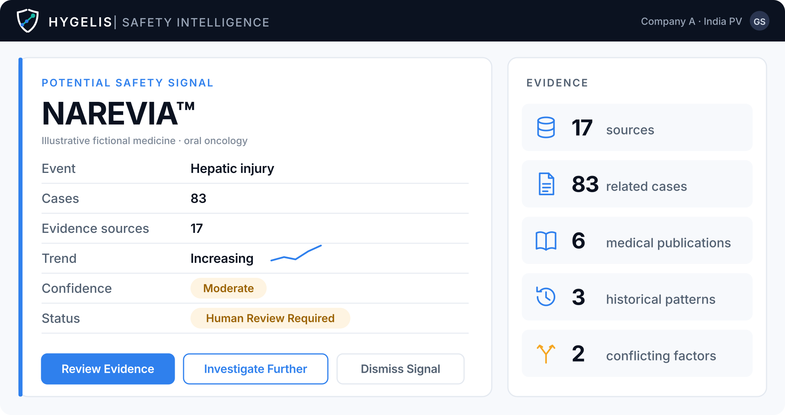

Dr. Harleen Kaur38 · PV Physician · Patiala
“I can investigate the case in front of me. I can’t manually search every other case that might be connected to it.”
- Reports through the established route; Hygelis never sees her hospital’s records
Hygelis is an AI-native intelligence layer for pharmaceutical safety teams. It continuously connects the evidence they are authorised to use, then investigates potential safety signals step by step, faster than people can by hand.
Help safety teams find and investigate potential safety signals earlier, without taking decisions away from qualified people.
Become the evidence-intelligence infrastructure for the whole life of a medicine’s safety.
Hygelis is inspired by Hygieia, the ancient Greek personification associated with health, prevention and maintaining well-being.
After launch, a medicine’s safety story is only beginning, and the patterns that matter are spread across evidence no one person sees at once.
Case reports, literature and real-world data grow every week after launch.
One potential signal can span dozens of cases, papers and past patterns.
Indian guidance asks MAHs to screen literature at least weekly and report serious adverse events within 15 days [1]. Analysts spend their time searching, not judging.
Every marketing authorisation holder must run a pharmacovigilance system, and new targeted cancer medicines carry the most post-market uncertainty.
Why the problem exists, and where Hygelis starts.
Hygelis helps pharmaceutical safety teams find and investigate potential safety signals earlier, by continuously connecting evidence that people can’t realistically review at the same scale.
Cases, papers and history arrive linked.
The multi-step work runs in the background.
Trend and confidence set the queue.
The same package for every signal.
Sources, reasoning and decision logged together.
Hours move from searching to judgement.
Economic value, measured rather than promised: analyst time back, earlier review of emerging issues, fewer inconsistent decisions. Each pilot measures its own baseline for time from signal to review-ready package, so we don’t quote a percentage.
The core product architecture, from authorised evidence to a logged human decision.

The agent can’t:
From an observation in Patiala to a qualified decision in Gurgaon.
Who sees it, who investigates it, who buys and decides, who audits. All fictional.
“I can investigate the case in front of me. I can’t manually search every other case that might be connected to it.”
“It’s figuring out whether ten different pieces of evidence are telling us the same story.”
“Can your system show me exactly why this became a signal?”
“Show me everything Hygelis used to reach this conclusion.”
An oncology-first Hygelis Safety Graph of drug–event relationships and expert-validated examples.
Drug → adverse event → patient factors → medical evidence → historical cases
Each qualified review records what mattered and where the system was uncertain, improving safety intelligence within the customer’s authorised data boundary. Across customers, Hygelis can improve its domain methods, evaluation frameworks and workflow design without pooling customer-identifiable data.
Hygelis becomes part of review processes, evidence repositories and audit trails.
Our moat doesn’t start with lock-in. It starts with intelligence, and grows into infrastructure.
Why Hygelis gets harder to copy with every qualified investigation.
Big pharma procurement and established PV systems.
So: evidence quality, auditability and compatibility win deals.
Data providers, cloud and model vendors.
So: stay model- and source-agnostic where practical.
Established PV software vendors.
So: compete on agentic investigation, not case management.
Manual analysts, safety databases, outsourced PV.
So: prove investigation speed and capacity, not another dashboard.
Models lower the technical bar; trust and validation don’t.
So: build what a model alone can’t copy.
What happens when the AI gets something wrong? Autonomy is set by risk, and every signal can be traced.
Classify, extract, organise, retrieve, flag duplicates.
Human role: sampling audits
Nothing moves forward without a qualified reviewer.
Human role: required review & sign-off
Serious events, thin or conflicting evidence, low confidence.
Human role: senior reviewer decides
Informed by CIOMS Working Group XIV (2025): human oversight should be risk-based, and “AI systems themselves cannot be held accountable” [2].
Answers only from authorised sources; uncited claims are blocked.
Reviewers dismiss, re-open or re-weight evidence, with a logged reason.
Versioned models, expert-validated test sets, drift alerts, QA audits.
No evidence → no autonomous conclusion.
Hygelis supports Company A’s pharmacovigilance system. It does not replace PvPI, NCC-PvPI or CDSCO, and it holds no endorsement from them.
Company A’s PV system, its India-based PV Officer-in-Charge and its PV System Master File stay in charge, and the PSMF must describe and validate computerised tools like Hygelis [1]. For a new drug like Narevia, safety update reports (PSURs) are due every six months for the first two years. Hygelis assembles evidence; qualified staff assess, decide and submit.
Clinicians keep reporting through PvPI’s ADR Monitoring Centres. NCC-PvPI recommends, CDSCO acts [3]. Hygelis takes no data from hospitals, PvPI or VigiBase.
Company A is the data fiduciary; Hygelis is its data processor, which the Act allows only under a valid contract [4]. Data is purpose-limited, pseudonymised where possible, encrypted, access-logged and tenant-isolated. The Rules (notified 14 Nov 2025) phase in over 18 months, and breaches must be reported to the Data Protection Board and affected people.
Consent managers (India-based companies under the Rules) serve people who give consent directly [4]. Hygelis collects no consent itself: patient-level data arrives only through Company A’s existing processes, and choosing the lawful basis is Company A’s job.
The Act lets the government restrict transfers to notified countries (Section 16) rather than mandating localisation [4]. By design, Hygelis still hosts Indian personal data in India.
The IT Rules, 2021 mainly govern intermediaries that host users’ content, and Hygelis, a private B2B tool, is not built as one. It still labels every AI-generated statement and links it to its sources.
Moderate confidence, two conflicting factors: the system escalates rather than concludes.
Hygelis, Company A, NAREVIA™ and every person shown are fictional. Real places are used for context only; no affiliation, endorsement or data-sharing relationship with any real institution is implied. All dashboard numbers are illustrative.
| Option | Upside | Why not / why |
|---|---|---|
| 1 · Fully autonomous, signal to regulatory action | Maximum speed | Unsafe; accountability can’t sit with a model; conflicts with MAH duties |
| 2 · Passive alert generator | Low risk | Leaves the manual investigation bottleneck untouched |
| 3 · Agentic investigation + mandatory qualified review | Substantial automation | Chosen: automates the investigation, keeps human accountability for consequential decisions |
Moat decision tree: lock-in first? (rejected: buyers resist it) → proprietary hospital data? (rejected: not realistic on day one) → specialisation → expert data → workflow (chosen).
| Gemini | Brainstorming the concept, stress-testing realism, drafting the handoff and brand documents |
|---|---|
| ElevenLabs | Narration for the four films, generated from my own scripts |
| Claude | Films, persona cards and this website, built from the handoff; transcription for captions |